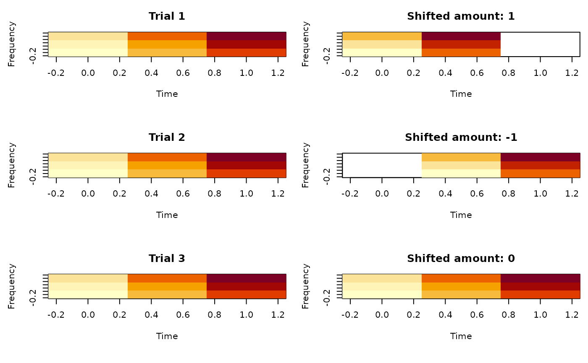

Re-arrange arrays in parallel
Value
An array with same dimensions as the input x, but with
index shifted. The missing elements will be filled with NA.
Details
A simple use-case for this function is to think of a matrix where each row is a signal and columns stand for time. The objective is to align (time-lock) each signal according to certain events. For each signal, we want to shift the time points by certain amount.
In this case, the shift amount is defined by shift_amount, whose
length equals to number of signals. along_margin=2 as we want to shift
time points (column, the second dimension) for each signal. unit_margin=1
because the shift amount is depend on the signal number.
Examples
# Set ncores = 2 to comply to CRAN policy. Please don't run this line
ravetools_threads(n_threads = 2L)
x <- matrix(1:10, nrow = 2, byrow = TRUE)
z <- shift_array(x, 2, 1, c(1,2))
y <- NA * x
y[1,1:4] = x[1,2:5]
y[2,1:3] = x[2,3:5]
# Check if z ang y are the same
z - y
#> [,1] [,2] [,3] [,4] [,5]
#> [1,] 0 0 0 0 NA
#> [2,] 0 0 0 NA NA
# array case
# x is Trial x Frequency x Time
x <- array(1:27, c(3,3,3))
# Shift time for each trial, amount is 1, -1, 0
shift_amount <- c(1,-1,0)
z <- shift_array(x, 3, 1, shift_amount)
oldpar <- par(mfrow = c(3, 2), mai = c(0.8, 0.6, 0.4, 0.1))
for( ii in 1:3 ){
image(t(x[ii, ,]), ylab = 'Frequency', xlab = 'Time',
main = paste('Trial', ii))
image(t(z[ii, ,]), ylab = 'Frequency', xlab = 'Time',
main = paste('Shifted amount:', shift_amount[ii]))
}

par(oldpar)